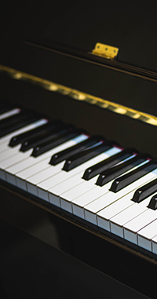
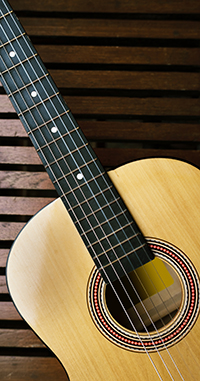
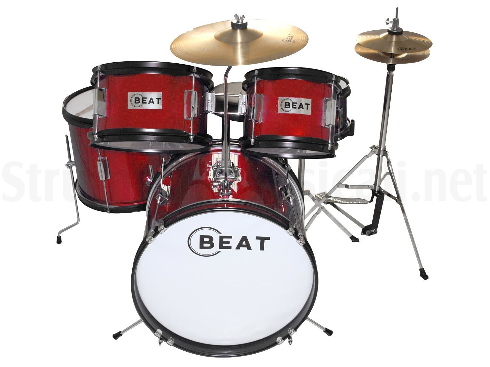
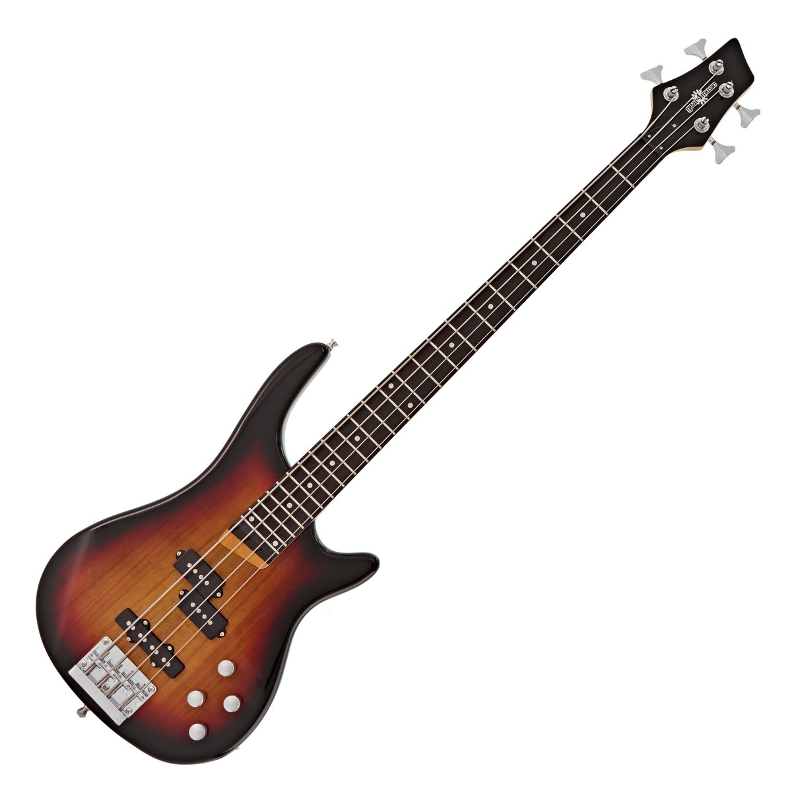

Introduzione strumenti
Gli strumenti musicali sono oggetti sonori costruiti con lo scopo di produrre musica. Qualsiasi oggetto può essere utilizzato per creare ritmi e suoni. nel caso dello strumento musicale, la destinazione principale dell’oggetto è quella di essere suonato.
La scienza che studia gli strumenti musicali, si chiama organologia, in base ad essa gli strumenti musicali vengono suddivisi a seconda del mezzo con cui producono il suono.
È possibile individuare quattro famiglie:
- Cordafoni: strumenti che producono il suono tramite corde tese
- Aerofoni: strumenti che producono il suono per mezzo dell’aria
- Percussioni: strumenti che producono il suono tramite la percussione di vari materiali
- Elettrofoni: strumenti che producono il suono per via elettrica. All’interno
di questa famiglia occorre distinguere ulteriormente gli strumenti in base ad altre
particolarità:
- Modo con cui producono il loro suono
- Materiale di cui sono fatti
- Natura dell’effetto acustico che producono

Il pianoforte è uno strumento cordafono dalla sonorità classica.

La chitarra è uno strumento cordafono dal suono riconoscibilissimo.

La batteria fa parte della famiglia delle percussioni.

Il basso è uno strumento cordafono dalle tonalità gravi.